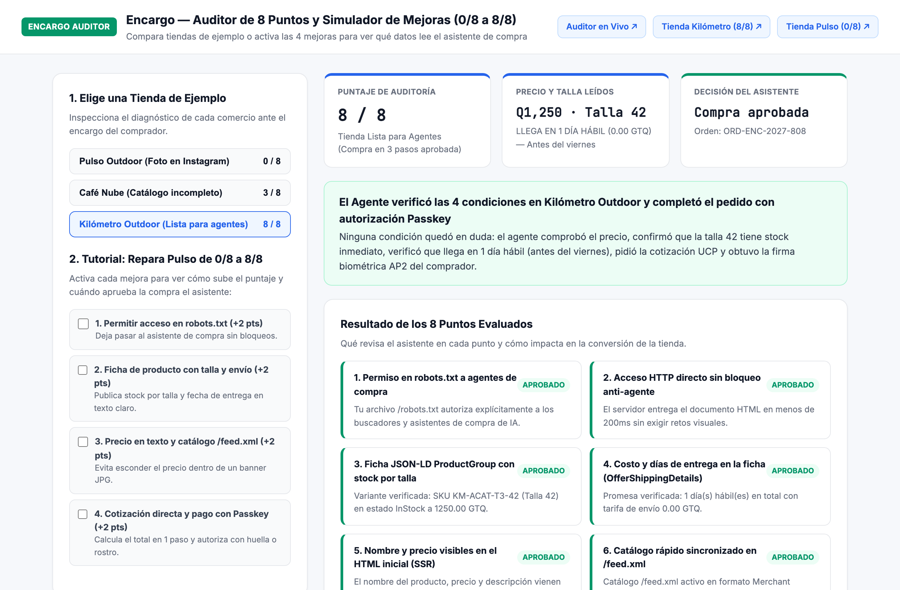
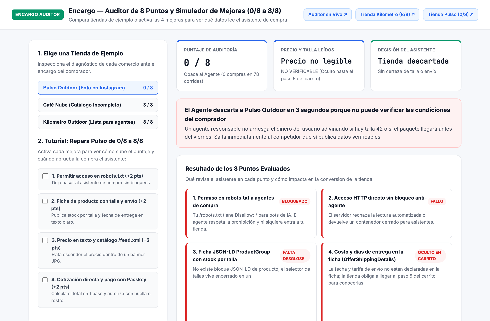
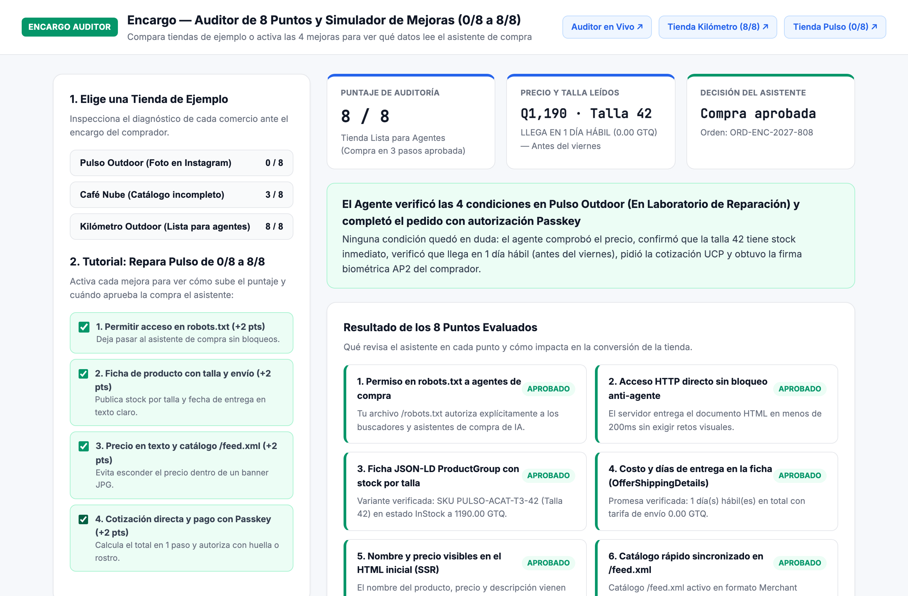
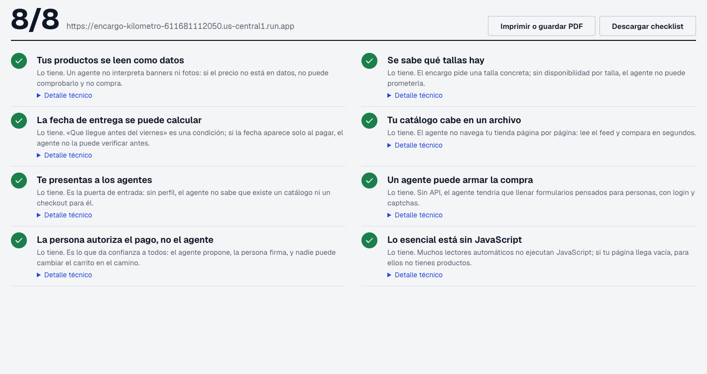

1. Qué vas a lograr y cómo se ve al final
No necesitas instalar nada en tu computadora para realizar este taller. Trabajarás directamente en tu navegador usando las herramientas públicas desplegadas en internet para auditar tiendas en línea con ejemplos comentados y practicar cómo llevar una tienda de 0/8 a 8/8 puntos para que un asistente de IA pueda encontrar tus productos, verificar tallas y fechas de entrega, y completar un pedido.
0/8 a 8/8): https://encargo-auditor-lab-611681112050.us-central1.run.app2. Auditor en vivo para cualquier URL:
https://encargo-app-611681112050.us-central1.run.app/auditoria3. Tienda Pulso (
0/8 — pensada solo para ojos humanos): https://encargo-pulso-611681112050.us-central1.run.app4. Tienda Kilómetro (
8/8 — lista para personas y agentes): https://encargo-kilometro-611681112050.us-central1.run.app5. App Encargo (asistente de compras):
https://encargo-app-611681112050.us-central1.run.app
Así se ve la herramienta cuando tu tienda alcanza 8/8
Al abrir el Simulador de Auditoría y Reparación, verás una vista limpia de dos columnas: a la izquierda seleccionas una tienda de ejemplo o activas las 4 mejoras; a la derecha ves el puntaje (8/8), los datos exactos que logra leer el asistente (Q1,250 · Talla 42 · Entrega en 1 día hábil) y el estado de los 8 puntos evaluados:

2. Por qué una tienda atractiva en Instagram puede perder la venta ante un asistente
Imagina que un martes por la noche una persona busca unas botas impermeables para subir el volcán Acatenango el fin de semana. En lugar de abrir varias pestañas y llenar formularios en el teléfono, le escribe este encargo a su asistente de IA en https://encargo-app-611681112050.us-central1.run.app:
Abre en tu navegador las dos tiendas públicas que venden el mismo calzado y compáralas:
- Pulso Outdoor (
https://encargo-pulso-611681112050.us-central1.run.app): Tiene un diseño visual llamativo y mejor precio (Q1,190/$139 USD), pero el precio de oferta está dibujado dentro de una imagen JPG, el selector de tallas está encerrado en un gráfico<canvas>y la fecha de envío solo aparece después de llenar 5 pantallas del carrito. - Kilómetro (
https://encargo-kilometro-611681112050.us-central1.run.app): CuestaQ1,250($145 USD), pero publica precio, disponibilidad por talla y días de entrega en texto estructurado desde la primera página.
3. Qué significan los 8 puntos de la auditoría
Cuando evalúas una tienda en https://encargo-app-611681112050.us-central1.run.app/auditoria o en el Simulador Interactivo, el diagnóstico revisa 8 puntos prácticos divididos en el recorrido de compra:
| Punto evaluado | Qué busca el asistente | Qué ocurre si falta en tu tienda |
|---|---|---|
1. Permiso en robots.txt | Que tu archivo /robots.txt permita la entrada a buscadores de compra (OAI-SearchBot, Claude-SearchBot). | El asistente respeta la prohibición y ni siquiera entra a ver tus productos. |
| 2. Página accesible sin trabas visuales | Que el servidor entregue la página del producto sin obligar a resolver acertijos de imágenes antes de ver el catálogo. | El asistente no puede leer el producto y salta al siguiente comercio. |
| 3. Disponibilidad por talla o variante | Que cada talla (Talla 41, Talla 42) indique claramente si está en stock o agotada. | Si solo dice «En stock general», el asistente no se arriesga a comprar una talla agotada. |
| 4. Costo y días de envío visibles | Que la tarifa de envío y los días de entrega estén declarados en la ficha del producto. | Si el comprador pidió «que llegue antes del viernes», tu tienda queda descartada por falta de fecha. |
| 5. Nombre y precio en texto HTML | Que el nombre y el precio vengan en texto desde el servidor y no escondidos dentro de un banner JPG. | Los lectores rápidos de los asistentes no ven el precio de oferta. |
6. Catálogo rápido (/feed.xml) | Un archivo con tus productos, precios y existencias al día (el mismo que usas para Google Shopping o Meta Ads). | El asistente tarda mucho más en revisar qué modelos tienes disponibles. |
| 7. Cotización en un solo paso | Poder consultar el total exacto (producto + envío + impuestos) sin recorrer 7 pantallas manuales de checkout. | El proceso se rompe si algún formulario visual intermedio cambia. |
8. Autorización con huella o rostro (Passkey) | Permitir que el comprador apruebe el monto exacto desde su teléfono con Touch ID o Face ID. | El cliente no tiene que escribir ni compartir los 16 dígitos de su tarjeta con el chat de IA. |
4. Probar la auditoría con los 3 ejemplos comentados
Abre https://encargo-auditor-lab-611681112050.us-central1.run.app y haz clic en los 3 botones de la sección «1. Elige una Tienda de Ejemplo» en la columna izquierda:
Caso A: Pulso Outdoor (0 / 8 puntos)
Al seleccionar Pulso Outdoor, verás cómo todos los puntos aparecen en rojo con su nota explicativa. Aunque Pulso tiene el precio más bajo (Q1,190), el asistente reporta Precio no legible y Tienda descartada:

Caso B: Café Nube (3 / 8 puntos)
Haz clic en Café Nube (Catálogo incompleto). Esta tienda sí deja pasar al asistente y muestra el precio en texto (3/8), pero no desglosa el stock por talla ni indica cuántos días tarda el envío. El resultado es el mismo: el asistente no puede garantizar que llegue el viernes y descarta la compra.
Caso C: Kilómetro Outdoor (8 / 8 puntos)
Haz clic en Kilómetro Outdoor. Los 8 puntos están aprobados en verde y el asistente confirma el pedido ORD-ENC-2027-808.
5. Tutorial práctico: Repara la tienda de `0/8` a `8/8`
En la parte inferior izquierda del Simulador Interactivo encontrarás la sección «2. Tutorial: Repara Pulso de 0/8 a 8/8». Ve activando las 4 casillas una por una y observa qué cambia en tu tienda:
Mejora 1: Permitir el acceso a buscadores de compra en robots.txt (Sube a 2/8)
Muchos comercios bloquearon todos los bots en años anteriores para evitar entrenamiento de modelos y, sin querer, cerraron también la puerta a los asistentes que traen compradores. Puedes separar ambos permisos en tu archivo /robots.txt:
# Permitir asistentes de búsqueda y compra que traen clientes
User-agent: OAI-SearchBot
Allow: /
User-agent: Claude-SearchBot
Allow: /
# Si deseas bloquear recolección masiva para entrenamiento, hazlo por separado:
User-agent: CCBot
Disallow: /Mejora 2: Agregar la ficha de producto con stock por talla y días de envío (Sube a 4/8)
Pega en el HTML de tu página de producto un bloque <script type="application/ld+json"> estándar de Schema.org. Esto le dice a Google, a los buscadores y a los agentes de IA el precio exacto, qué tallas tienen stock y cuánto tarda el envío:
<script type="application/ld+json">
{
"@context": "https://schema.org",
"@type": "ProductGroup",
"name": "Botas Acatenango T3 Impermeables",
"hasVariant": [
{
"@type": "Product",
"sku": "PULSO-ACAT-T3-42",
"size": "42",
"offers": {
"@type": "Offer",
"price": "1190.00",
"priceCurrency": "GTQ",
"availability": "https://schema.org/InStock",
"shippingDetails": {
"@type": "OfferShippingDetails",
"shippingRate": { "@type": "MonetaryAmount", "value": "0.00", "currency": "GTQ" },
"deliveryTime": {
"@type": "ShippingDeliveryTime",
"handlingTime": { "@type": "QuantitativeValue", "minValue": 0, "maxValue": 0, "unitCode": "DAY" },
"transitTime": { "@type": "QuantitativeValue", "minValue": 1, "maxValue": 1, "unitCode": "DAY" }
}
}
}
}
]
}
</script>Mejora 3 y Mejora 4: Precio en texto HTML, catálogo /feed.xml y pago con Passkey (Llega a 8/8)
Marca las casillas 3 y 4 en el simulador. Verás cómo Pulso Outdoor sube a 8 / 8 y, al tener mejor precio que Kilómetro (Q1,190 frente a Q1,250) ofreciendo ahora la misma certeza en talla y envío, el asistente elige a Pulso y aprueba la compra:

6. Audita tu propio comercio y arma tu plan de acción
Para cerrar el taller, abre el auditor público en https://encargo-app-611681112050.us-central1.run.app/auditoria y pega la dirección de cualquier tienda en línea que administres o uses con frecuencia:

Orden recomendado para aplicar estas mejoras en tu tienda
- Hoy mismo (15 minutos): Revisa
tudominio.com/robots.txty verifica que no estés bloqueando a los buscadores de asistentes de IA ni ocultando precios dentro de imágenes. - Esta semana (1 a 2 horas): Activa o completa los datos de disponibilidad por talla/variante y tiempos de entrega en la ficha
Schema.orgde tus páginas de producto (en Shopify, WooCommerce o VTEX puedes hacerlo desde la plantilla del tema) y verifica que tu/feed.xmlesté actualizado. - Siguiente trimestre: Incorpora endpoints de cotización directa y métodos de pago con confirmación biométrica (
Passkeys/ billeteras digitales) para reducir el abandono en el checkout.